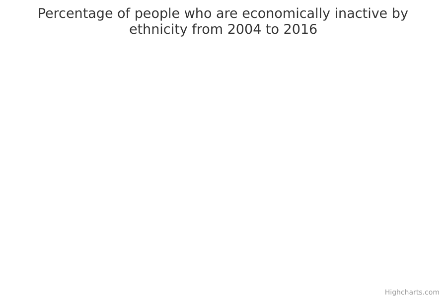

Economic inactivity
The main facts and figures show that:
-
in 2016, the total working age population in England, Wales and Scotland was just under 40 million, of which a little over 34 million people were White and nearly 6 million people were from all Other ethnic groups
-
in 2016, the economic inactivity rate – the number of people who are economically inactive as a percentage of the total working age population – was 21% for White British people and 30% for people from all Other ethnic groups, a difference of nine percentage points
-
in 2016, there were around 1.74 million economically inactive people from ethnic minorities (other than White ethnic minorities), which accounted for close to 20% of all people who are economically inactive
-
in 2016, the economic inactivity rate for Pakistani/Bangladeshi women was 59%, which is 33 percentage points higher than for White British women
Things you need to know
The Annual Population Survey (APS) is a ‘sample survey’. It collects information from a random sample of the population to make generalisations (reach 'findings') about the total population.
The commentary for this data includes only reliable, or ‘statistically significant’, findings. Findings are statistically significant when we can be confident that they can be repeated, and are reflective of the total population rather than just the survey sample.
Specifically, the statistical tests used mean we can be confident that if we carried out the same survey on different random samples of the population, 19 times out of 20 we would get similar findings.
As with all surveys, the estimates from the APS are subject to a degree of uncertainty as they are based on a sample of the population. The degree of uncertainty is greater when the number of respondents is small, so it will be highest for ethnic minority groups.
Smaller numbers of survey respondents from ethnic minority backgrounds mean that estimates for all Other ethnic groups are more unreliable than estimates for White people (which includes White British and White ethnic minorities).
Results taken from a low number of responses are more likely to be affected by statistical variation, so observed changes might not reflect real differences. As such, caution is needed when interpreting short-term trends in the data, especially for sub groups (for example, a specific ethnic group, age group and gender).
When looking at data for ‘All’ groups, any values based on fewer than 30 responses have been withheld, and when further breaking down the data by ethnicity, any values based on fewer than 100 responses have been withheld. This is to protect confidentiality or because the numbers involved are too small to draw any reliable conclusions.
Data is sourced from the Annual Population Survey to get lower level details such as local authority area. Higher-level figures may differ slightly from reports published by the Department for Work and Pensions and the Office for National Statistics that also use the Labour Force Survey.
Changes were made to the Labour Force Survey (and therefore the Annual Population Survey) ethnicity questions in January to March 2011, to bring them more in line with Census data collection on these topics. In April to June 2011 further changes were made to the ethnicity questions to bring them in line with Scottish Census data collection. As a result, there may be some inconsistencies with estimates from earlier than 2011.
What the data measures
This data measures the ‘economic inactivity rate’ in England, Wales and Scotland across different ethnic groups.
The ‘economic inactivity rate’ is the number of people who are economically inactive as a percentage of the total ‘working age’ population. ‘Working age’ includes everyone aged 16 to 64 years.
A person of working age is counted as economically inactive if:
- they are out of work
- they have not been actively looking for work in the past 4 weeks
- they are not waiting to start a job
People who are caring for their family or retired are also counted as economically inactive.
A person in full-time education will be counted as economically inactive unless they are either:
- in paid work, in which case they are counted as employed
- looking for, and available to start, work, in which case they are counted as unemployed
The figures come from the Annual Population Survey (APS), which is a general household survey covering the UK. It uses data from the Labour Force Survey as well as other local data.
Why these ethnic categories were chosen
Where possible, data is broken down by 9 groups:
- White British
- White Other
- Black
- Mixed
- Indian
- Pakistani/Bangladeshi
- Other Asian
- Other ethnic groups
- Unreported – where the ethnicity has not been recorded or the person chose not to state their ethnicity
However, in cases where the number of people surveyed (the ‘sample size’) was too small to draw any firm conclusions, the data is broken down into:
- White – White ethnic groups, including White British and White ethnic minorities
- all Other ethnic groups – all other ethnic minorities
People whose ethnicity is 'Unreported' are counted in measurements for ‘all’ groups, such as all people who are economically inactive, and not counted where data is broken down by White compared with all Other ethnic groups.
Economic inactivity by ethnicity

Percentage and number of people who are economically inactive by ethnicity
| All | 22 | 8,835,000 |
|---|---|---|
| Asian | 32 | 997,000 |
| Indian | 23 | 261,000 |
| Pakistani/Bangladeshi | 39 | 460,000 |
| Asian other | 34 | 276,000 |
| Black | 25 | 337,000 |
| Mixed | 28 | 143,000 |
| White | 21 | 7,087,000 |
| White British | 21 | 6,590,000 |
| White other | 17 | 497,000 |
| Other | 34 | 260,000 |
Summary
This data shows that:
-
in 2016, approximately 8.84 million people of working age (people aged 16 to 64 years) were economically inactive; this is around 22% of the working age population
-
in 2016, the Pakistani/Bangladeshi group had the highest economic inactivity rate (39%), 18 percentage points higher than the White British group
-
in 2016, the White Other group had the lowest economic inactivity rate, at 17%
Download image and data
Economic inactivity by White and Other ethnicities

Percentage and number of people who are economically inactive by White and Other ethnicities
| All | 22 | 8,835,000 |
|---|---|---|
| White | 21 | 7,087,000 |
| Other | 30 | 1,737,000 |
Summary
-
in 2016, approximately 8.84 million people of working age (people aged 16 to 64 years) were economically inactive; this is around 22% of the working age population
-
7.09 million of those economically inactive people were White, which is around 21% of the working age White population
-
1.74 million of those 8.84 million economically inactive people were from an ethnic minority (other than a White ethnic minority), which is around 30% of the working age ethnic minority population
Download image and data
Economic inactivity by ethnicity over time

Percentage of people who are economically inactive by ethnicity from 2004 to 2016
| 2004 | 2005 | 2006 | 2007 | 2008 | 2009 | 2010 | 2011 | 2012 | 2013 | 2014 | 2015 | 2016 | |
| All | 24 | 24 | 23 | 23 | 23 | 23 | 24 | 24 | 23 | 23 | 23 | 22 | 22 |
|---|---|---|---|---|---|---|---|---|---|---|---|---|---|
| Indian | 27 | 26 | 25 | 26 | 26 | 25 | 24 | N/A * | 23 | 24 | 24 | 24 | 23 |
| Pakistani/Bangladeshi | 49 | 49 | 48 | 48 | 46 | 44 | 44 | N/A * | 42 | 41 | 40 | 40 | 39 |
| Asian other | 36 | 36 | 34 | 33 | 31 | 32 | 36 | N/A * | 34 | 36 | 33 | 32 | 34 |
| Black | 31 | 30 | 28 | 28 | 28 | 29 | 28 | N/A * | 27 | 26 | 27 | 26 | 25 |
| Mixed | 29 | 30 | 27 | 28 | 31 | 30 | 28 | N/A * | 29 | 26 | 28 | 28 | 28 |
| White British | 22 | 22 | 22 | 22 | 22 | 22 | 23 | N/A * | 22 | 22 | 22 | 21 | 21 |
| White other | 25 | 23 | 21 | 21 | 21 | 21 | 21 | N/A * | 20 | 19 | 19 | 17 | 17 |
| Other | 38 | 36 | 36 | 36 | 35 | 36 | 35 | N/A * | 35 | 35 | 37 | 35 | 34 |
Summary
This data shows that:
-
from 2004 to 2016, the economic inactivity rate for the White Other group fell from 25% to 17%, and the rate for the Pakistani/Bangladeshi group fell from 49% to 39%
-
from 2004 to 2016, the Pakistani/Bangladeshi group consistently had the highest rate of economic inactivity
Download data
Economic inactivity by ethnicity and region

Percentage and number of people in economic inactivity by ethnicity and region
| White | All other ethnic groups | |||
| All | 21 | 7,087,000 | 30 | 1,737,000 |
|---|---|---|---|---|
| East Midlands | 21 | 537,000 | 32 | 100,000 |
| East of England | 19 | 646,000 | 27 | 103,000 |
| London | 18 | 645,000 | 27 | 654,000 |
| North East | 24 | 372,000 | 36 | 32,000 |
| North West | 23 | 916,000 | 36 | 179,000 |
| Scotland | 23 | 728,000 | 38 | 64,000 |
| South East | 18 | 915,000 | 26 | 135,000 |
| South West | 19 | 606,000 | 26 | 45,000 |
| Wales | 25 | 445,000 | 39 | 34,000 |
| West Midlands | 22 | 621,000 | 35 | 255,000 |
| Yorkshire and The Humber | 22 | 656,000 | 36 | 135,000 |
Summary
This data shows that:
-
in all regions across the country in 2016, the White group had a lower economic inactivity rate than all Other ethnic groups
-
in 2016, the largest gap between the economic inactivity rate for White people and the rate for people from all Other ethnic groups was in Scotland, at 15 percentage points
-
both London and the South East had the lowest economic inactivity rates for White people, at 18%, and the South East and the South West had the lowest rates for all Other ethnic groups, at 26%
Download data
Economic inactivity by ethnicity and gender

Percentage and number of economically inactive people by ethnicity and gender
| Female | Male | |||
| All | 27 | 5,497,000 | 17 | 3,339,000 |
|---|---|---|---|---|
| Indian | 32 | 177,000 | 14 | 84,000 |
| Asian other | 41 | 181,000 | 25 | 94,000 |
| Pakistani/Bangladeshi | 59 | 330,000 | 21 | 130,000 |
| Black | 29 | 214,000 | 21 | 123,000 |
| Mixed | 31 | 87,000 | 24 | 56,000 |
| White British | 26 | 3,971,000 | 17 | 2,619,000 |
| White other | 23 | 362,000 | 9 | 135,000 |
| Other | 45 | 168,000 | 24 | 92,000 |
Summary
This data shows that:
-
in 2016, women had higher economic inactivity rates than men in all ethnic groups
-
in 2016, the Other Asian group had the highest economic inactivity rate for men (25%), and the Pakistani/Bangladeshi group had the highest rate for women (59%)
-
in 2016, the gap between the economic inactivity rate for men and women was at its highest in the Pakistani/Bangladeshi group, at 38 percentage points
Download data
Economic inactivity by ethnicity and age

Percentage and number of economically inactive people by ethnicity and age
| 16-24 | 25-49 | 50-64 | ||||
| All | 38 | 2,671,000 | 14 | 2,937,000 | 27 | 3,226,000 |
|---|---|---|---|---|---|---|
| Indian | 59 | 94,000 | 14 | 108,000 | 27 | 59,000 |
| Pakistani/Bangladeshi | 56 | 150,000 | 32 | 243,000 | 46 | 67,000 |
| Asian other | 68 | 121,000 | 23 | 115,000 | 28 | 40,000 |
| Black | 50 | 140,000 | 18 | 131,000 | 22 | 66,000 |
| Mixed | 47 | 82,000 | 16 | 44,000 | withheld because a small sample size makes it unreliable | withheld because a small sample size makes it unreliable |
| White British | 35 | 1,866,000 | 12 | 1,893,000 | 27 | 2,831,000 |
| White other | 36 | 136,000 | 12 | 261,000 | 23 | 101,000 |
| Other | 61 | 79,000 | 28 | 140,000 | 32 | 41,000 |
Summary
This data shows that:
-
in 2016, people aged 16 to 24 years had the highest economic inactivity rate across all ethnic groups; this is likely to reflect high levels of full-time education within this age group
-
in 2016, the next highest economic inactivity rate across all ethnic groups was for people aged 50 to 64 years
-
amongst people aged 16 to 24 years in 2016, the highest economic inactivity rate was for the Other Asian group, at 68%
-
amongst people aged 25 to 64 years in 2016, the Pakistani/Bangladeshi group had the highest economic inactivity rates, at 32% and 46% respectively
-
in 2016, the White group consistently had the lowest economic inactivity rates across all age groups
Download data
Economic inactivity for 16 to 24 year olds over time

Percentage of economically inactive 16 to 24 year olds over time
| 2004 | 2005 | 2006 | 2007 | 2008 | 2009 | 2010 | 2011 | 2012 | 2013 | 2014 | 2015 | 2016 | |
| All | 32 | 32 | 33 | 33 | 34 | 35 | 38 | 37 | 37 | 38 | 39 | 37 | 38 |
|---|---|---|---|---|---|---|---|---|---|---|---|---|---|
| Indian | 46 | 49 | 44 | 45 | 48 | 51 | 51 | N/A * | 46 | 54 | 58 | 54 | 59 |
| Pakistani/Bangladeshi | 56 | 55 | 52 | 56 | 52 | 54 | 56 | N/A * | 56 | 52 | 55 | 53 | 56 |
| Asian other | 57 | 60 | 60 | 62 | 59 | 65 | 70 | N/A * | 68 | 69 | 69 | 67 | 68 |
| Black | 47 | 50 | 48 | 49 | 53 | 52 | 55 | N/A * | 53 | 53 | 54 | 56 | 50 |
| Mixed | 39 | 41 | 38 | 39 | 45 | 47 | 45 | N/A * | 42 | 38 | 43 | 46 | 47 |
| White British | 29 | 29 | 30 | 31 | 31 | 32 | 34 | N/A * | 34 | 34 | 35 | 34 | 35 |
| White other | 36 | 30 | 27 | 31 | 30 | 35 | 37 | N/A * | 44 | 42 | 41 | 36 | 36 |
| Other | 55 | 53 | 53 | 55 | 50 | 60 | 61 | N/A * | 58 | 63 | 65 | 59 | 61 |
Summary
This data shows that:
-
from 2004 to 2016, people aged 16 to 24 years in the Other Asian group consistently had the highest rate of economic inactivity
-
from 2004 to 2016, White British people aged 16 to 24 years had the lowest rate of economic inactivity, and people from the White Other group had the next lowest rate in most of the years during that period, apart from 2008 where White Other was lower than White British
Download data
Methodology and type of data
Type of data
Survey
Purpose of data source
Survey data, collected to allow analysis of labour market and related topics at a lower level than is possible in the Labour Force Survey.
Methodology
The Annual Population Survey is a continuous household survey and is a ‘sample survey’. This means it collects information from a random sample of the population to make generalisations (reach 'findings’) about the total population (such as economic inactivity). Most people are interviewed face to face at first, and later by telephone. The sample is formed partly from waves 1 and 5 of the Labour Force Survey (in which selected addresses are contacted every 3 months) and partly from boost cases which are in the sample for 4 waves, spread one year apart.
Participants are randomly selected from the Royal Mail Postcode address File (PAF) although we also use the NHS communal accommodation list and (in the case of remote parts of Scotland) telephone directories. All eligible individuals found at the selected address may be interviewed. Only those for whom either the individual responds or another family member gives a proxy response are included in the dataset used for this analysis. The complex survey design has been taken into account when calculating confidence intervals.
The achieved sample of approximately 275,000 undergoes weighting which is structured at local authority level and uses age and sex dimensions. The Office for National Statistics population estimates and projections are used as the basis for this weighting process.
Quality and methodology informationData source details
Source
Department
Department for Work and Pensions
Type of statistic
National statistic
Publication frequency
Quarterly
Suppression rules
In data covering all ethnic groups together, estimates based on sample sizes of less than 30 have been suppressed. For data broken down by ethnic groups, estimates based on sample sizes under 100 have been suppressed.
‘Suppression’ means these figures have not been included in the data, to protect confidentiality and because the numbers involved are too small to draw any reliable conclusions.
Download the data
economic-inactivity-by-region.csv
This file contains economic inactivity rates by ethnicity, time, gender, region, age, numerator, denominator, sample size and confidence intervals
economic-inactivity-by-local-authority.csvThis file contains economic inactivity rates by ethnicity, time, gender, region, local authority area, age, with numerator, denominator, sample size and confidence intervals
View this page as JSON